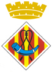
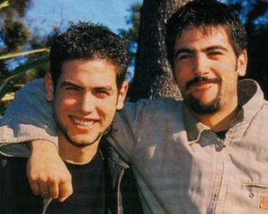
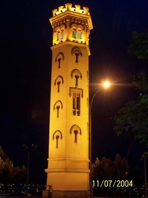
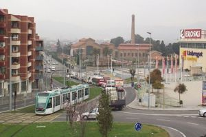
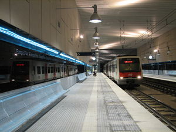

Cornellà de Llobregat
 De: La Frikipedia, la enciclopedia extremadamente seria.
De: La Frikipedia, la enciclopedia extremadamente seria.
| De la serie ciudades del mundo:
|
| Cornellà de Llobregat
|
|
|

|
| (Bandera)
|
(Escudo de armas)
|
|
| Topónimo oficial
|
Cornellà, Kornella o Estopa City
|
| País
|
Catalunya
|
| Código postal
|
08940
|
| Superficie
|
Una cagá de rata en el mapa
|
| Altitud
|
de muy bajo a muy alto
|
| Distancia
|
depende de si vas andando o en coche te resulta más grande o no
|
| Fundación
|
990 D.C.
|
| Población
|
87.000 censados (un huevo más sin censar, moros)
|
| Gentilicio
|
cornellense, kornellense, estopano, andaluz
|
| Alcalde
|
Casimiro Ynoteveo
|
| Aquí se habla cualquier idioma menos en catalán, por lo que no lo uses
|
Ciudad situada al sur-oeste de Sant Joan Despí (pijos) y Esplugues de Llobregat (y más pijos) {"Rodeate de amigos y buenas compañias"}.Esta ciudad es mundialmente conocida por ser la cuna de los Estopa por eso a su habitantes también se les conoce con el nombre de Estopienses, es más, no se conoce a esta ciudad por nada más.
Historia
Haciendo un poco de culturilla, Cornellà fue fundada en la epoca en la que Rey de Marruecos a pedir la posesión legítima de Cornellà junto con San Andrés de la Barca) y gran parte de Marrokell (Martorell).
El resto de la historia no le importa una mierda a nadie no tiene relevancia por lo que pasamos de ella.
Población
 Los
Estopa son los habitantes de Cornellà más famosos pero con la pasta que seguro que ha ganado y si son listos, se irán a vivir bien lejos de aquí
 No es la Torre del Oro ni nada similar, es la "Torre de la Miranda"
 ¿Realmente este tranvía sirve para algo?
 Nuesto querido “Carrilet”
Cornellà 2020, Madrid se quedará otra vez sin poder organizar las
Olimpiadas teniendo en cuenta que las del 2012 son en Londres y las del 2016 en Andorra la Vella
La población de Cornellà es ante todo muy homogénea. Esta compuesta de la siguiente forma:
Alcaldía
Está ciudad es uno de los feudos fuertes de los de PSAO en Catalunya. Su alcalde “de toda la vida” fue José Montilla (como no un andaluz) pero como le ofrecieron ser “President de la Generalitat” y poder robar ganar más pelas pues pa lla que se fue. Actualmente hay un tio que nadie sabe como se llama, que se ha cargao las fiestas por que ha quitado los conciertos gratis, de los cuales el Montilla les habia dotado (algo bueno tenia el Motilla) pero que todo el mundo se acuerda de su querida madre o tmbien recordado en algunas farolas con el lema de BALMONT GAY. (o como coño se escriba el nombre)
En un alarde de inteligencia sin limites el ayuntamiento ha tenido ideas tan bien recibidas por el pueblo como por ejemplo:
- Poner nuevos impuestos
- Quitar mediante obras faraónicas 3/4 partes de las plazas de aparcamiento de las calles (se ha dado casos de gente que ha tenido que coger algún tipo de transporte publico para ir a buscar su coche).
- Subir los impuestos
- Poner zona azules
- Subir los impuestos
- Gastarse la mitad del presupuesto de la ciudad en los fuegos artificiales de fin de fiestas.
- Subir los impuestos
- Construir el barrio de alto poder adquisitivo justo al lado del barrio más cani de la ciudad (separados por un parque eso si) para que así no tengan que desplazarse mucho para atracar y pegar a algún pijo
- Subir los impuestos
Transporte
La ciudad se supone que esta conectada con transporte público a las ciudades de alrededor y a Barcelona mediante metro, RENFE, autobús, tranvía y “El Carrilet”.
- Metro: la línea que llega es la L5 y hasta el 2007 circulaba por sus raíles un Molto (ya sabes monta y juega) que se caía a trozos y en el que te pasabas todo el trayecto rezando por llegar vivo a tu destino.
- RENFE: que decir de nuestra querida RENFE que no diga ya su nombre (Rogamos Empujen Nuestros Ferrocarriles Estropeados)
- Autobús: sin comentarios (no en serio mejor no hablar)
- Tranvía: pero ¿en que estaban pensando cuando decidieron construirlo?¿y cuando trazaron la ruta?
- Carrilet.: Pseudotren perteneciente a Ferrocarriles Catalanes (FF.CC.) o Ferrocarriles de la Generalitat de Catalunya (FGC)
o como coño se llamen ahora. Se caracteriza por ser de vía estrecha (como las calientapollas) por lo que el espacio en su interior es como el que hay en un piso ideal parejas. Otra característica es que pasan cuando les sale de los huevos cada 10 ó 15 minutos. Además es un sitio habitual de reunión de grupos canis.
Servicios
Cornellà es una ciudad multicultural donde encuantras servicios de todo tipo.
- Kebabs: actualmente existen más kebabs que bares normales, con lo que si quieres dar un tour gastronómico esta es una buena opción.
- Bar de españoles del furbol: este es un clásico en Cornellà. Aquí usted puede encontrar toda clase de ser u hombre ingiriendo bebidas alcohólicas en cantidades no moderadas.
- Bar chino: los chinos, cada vez más arraigados y enamorados de su cultura, buscan prestar sus servicios y demostrar sus conocimientos culinarios. Estos muestran una gran capacidad de trabajo puesto que usted puede encontrar un domingo por la tarde el bar chino abierto.
- Restaurante chino: parecido al bar chino pero aquí usted puede degustar sabores tales como el del perro, el del gato o cualquier animal doméstico.
- Bufete chino: aunque también japoneses, estos se han instalado en espectaculares locales con lujurioso mobiliario. Le dejan escoger la comida de un bufete libre y se la cocinan al momento, por lo que si a usted le gustan las bacterias en la comida de las otras personas que han ido antes que usted esta es la elección.
¿Sabias que ...
- ...a partir de una hora determinada si paseas por según que barrios vas vestido y vuelves desnudo a casa?
- ...Cornellà organizará los Juegos Olímpicos del 2020?
- ...para ello derribarán casi toda la ciudad para hacer las infraestructuras Olímpicas porque ya no queda espacio ni para un puesto de helados?
- ...el rio Llobregat cuando pasa por Cornellà ya no lleva agua por su cauce si no que lo que fluye por el es un liquido tóxico de naturaleza y procedencia desconocida?
- ...en los colegios se enseñan dos ramas de educación únicas en España que son "Como ser cani" y "Como ser Latin king"?
- ...en esta ciudad existe una nueva especie de tribu urbana fruto de la fusión de la cultura mora, cani y Latin King que aun los expertos están estudiando e intentando clasificar?
- ...no se distribuye la ciudad en barrios sino en zonas de bandas latinas, árabes, gitanas y canis?
- ...el lugar donde se reunen por el día los canis y jessis es en el centro comercial "Llobregat Centre" o más conocido como Eroski?
- ...y si es fin de semana y se ha puesto el sol es el "Tijuana"?
- ...que los deporte que más gente practica son liar tabaco aliñado con trocitos de planta exotica, la creación de líneas discontinuas e ir al “Tijuana” a ver si pillas con una
guarra chica sin casi ropa?
Autor(es):
- Fordus
- Frikiman
- Azulejos
- Rogalmar
- Nemesis
- Mr.0
- ArreKarallo
- Mistica
- Usuario1
- Generibot
Frikipedia 2005-2016, Licencia
GFDL 1.2 - Extraído por FrikiLeaks